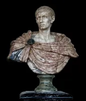
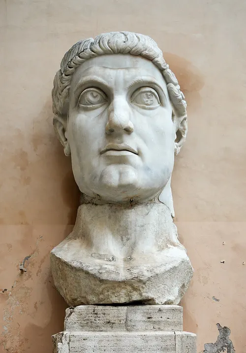
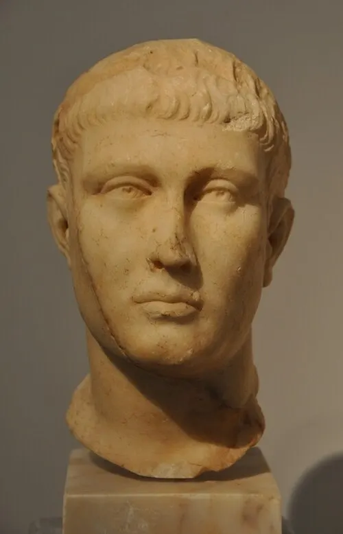
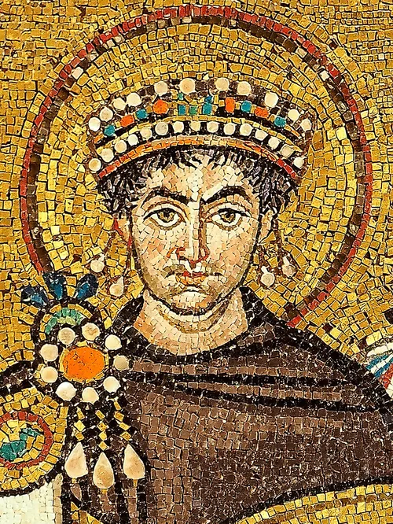

These are famous rulers often associated with major events in the Coptic era. Their reigns shaped church life, politics, and culture in Egypt from late antiquity onward.
Diocletian (r. AD 284-305)
Diocletian's accession in AD 284 marks the start of the Coptic calendar's "Era of the Martyrs." His reign included severe persecution of Christians in Egypt, making him a central figure in Coptic historical memory.

Constantine the Great (r. AD 306-337)
Constantine legalized Christianity and transformed its status across the Roman world. This shift strongly influenced Christian communities in Egypt and helped Coptic institutions expand and organize more openly.

Theodosius I (r. AD 379-395)
Theodosius made Nicene Christianity the official state religion of the empire. His era strengthened Christian authority and reshaped religious life in Egypt during the late Roman period.

Justinian I (r. AD 527-565)
Justinian's reign was known for legal reform, imperial building projects, and strong church policy. His religious interventions affected the relationship between imperial power and Coptic Christians.
